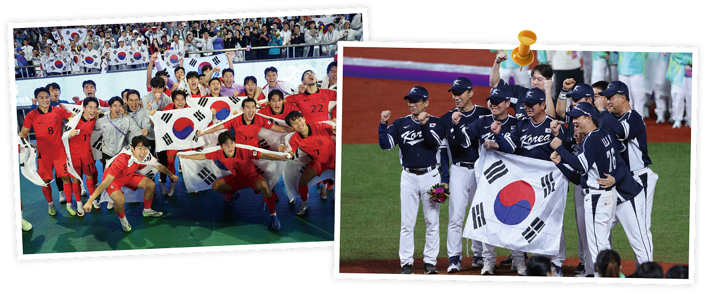
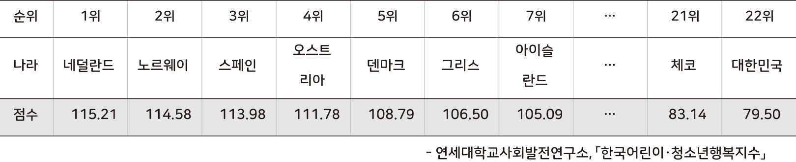

생각 열기
● 다음 자료를 보고 물음에 답해 보자.
자료 1

● 다음 자료를 보고 물음에 답해 보자.
자료 2
2021년도 어린이·청소년의 주관적 행복 - 국제 비교 연구

우리나라 어린이와 청소년의 ‘삶의 만족도 점수’는 경제 협력 개발 기구(OECD)의 주요 국가 가운데 가장 낮았고,
‘주관적 행복 지수’도 지난해보다 낮아진 것으로 조사됐다.
주관적 행복 지수를 평가하는 여섯 가지 항목(주관적 건강, 삶의 만족,
학교생활 만족, 어울림, 소속감, 외로움) 가운데 주관적 건강 지수와
삶의 만족도가 지난해에 비하여 큰 폭으로 낮아졌다.
자신의 건강 상태가 좋다고 응답한 비율 (주관적 건강 지수)과
자신의 삶에 대해 만족한다고 응답한 비율(삶의 만족도)은 22개국 가운데 한국이 가장 낮았다.
● ‘우리나라’를 떠올리면 가장 먼저 어떤 생각이 드는지 써 보자.
‘우리나라’를 떠올리면 작지만 강한 나라라는 생각이 떠오른다. 비록 영토는 그리 크지 않지만, 각종 국제 스포츠 대회에서 좋은 성적으로 세계를 놀라게 하기 때문이다.